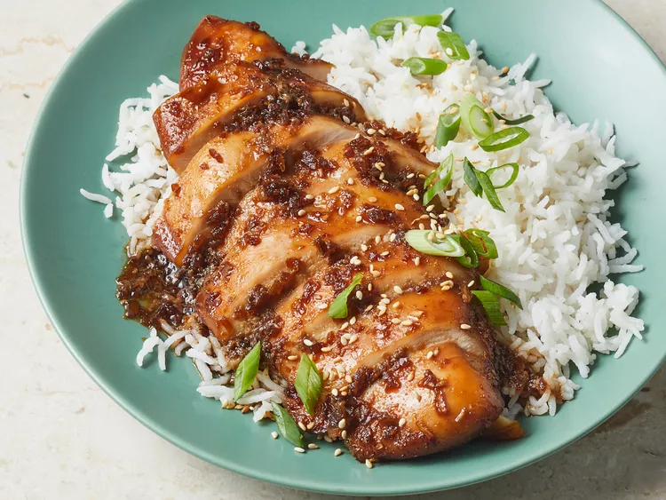

Bourbon Chicken

Bourbon chicken is a dish with New Orleans roots that's easy to make with chicken thigh pieces cooked in a sweet brown sugar, bourbon, ginger, garlic, and soy sauce glaze. Serve with rice for a restaurant-worthy meal.
1 ½ pounds skinless boneless chicken thighs, cut in 1-inch pieces
2 tablespoons cornstarch, divided
2 tablespoons olive oil, divided
¼ cup minced onion
2 cloves garlic, minced
1 teaspoon grated fresh ginger
1/3 cup reduced-sodium soy sauce
1/3 cup reduced sodium chicken broth
1/4 cup bourbon (or apple juice)
3 tablespoons packed brown sugar
1 tablespoon cider vinegar
1/4 teaspoon crushed red pepper
2 cups cooked rice
2 green onions, sliced